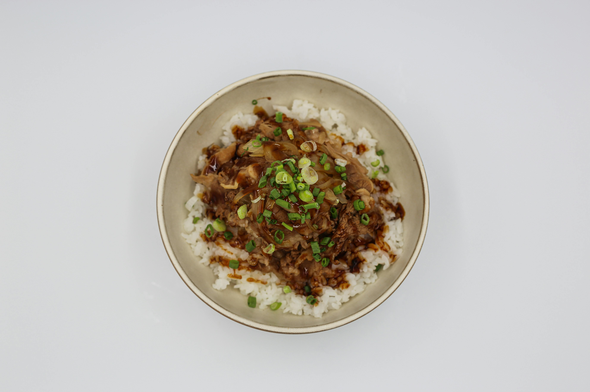

Home
Ground Beef Bulgogi

Description
Want to taste something oriental? Try this easy, fast and cheap to make dish.
Ingredients - 4 people
- Ground beef - 455g
- Garlic, crushed - 5 cloves
- Minced ginger - 1 Tbsp OR 1/2 tsp of dried ginger
- Sesame oil - 2 tsp
- Soy sauce - 120ml
- Brown sugar - 75g
- Crushed red pepper flakes 1/4 tsp
- Scallion, choopped - 1 bunch
Steps
- Heat a large skillet over medium heat. Add the ground beef and break it. Cook until browned. Drain off excess grease.
- Over medium heat add the garlic, fresh ginger and sesame oil. Cook for about 2 minutes
- Stir in soy sauce, brown sugar and crushed red pepper flakes. Reduce heat to a simmer and cook uncovered until the sauce reduces (about 5-7 minutes). Stir in the scallion
- Serve immediately over white rice and garnish with preferred toppings